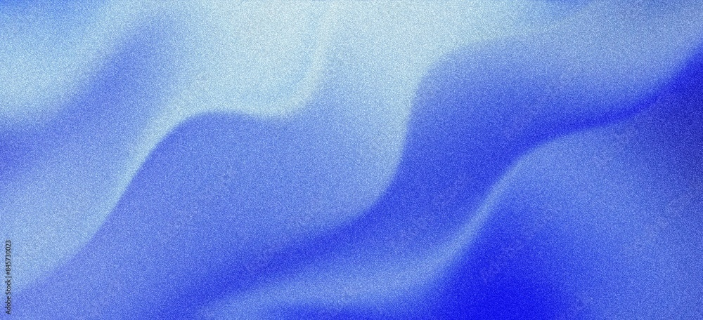

Technical Advisory & NDT Leadership
Provide senior-level technical oversight and strategic guidance across complex inspection environments. From Level III consulting to written practice development and full program design, this service ensures your inspection operations are compliant, defensible, and built for long-term performance in high-stakes environments.
Learn more